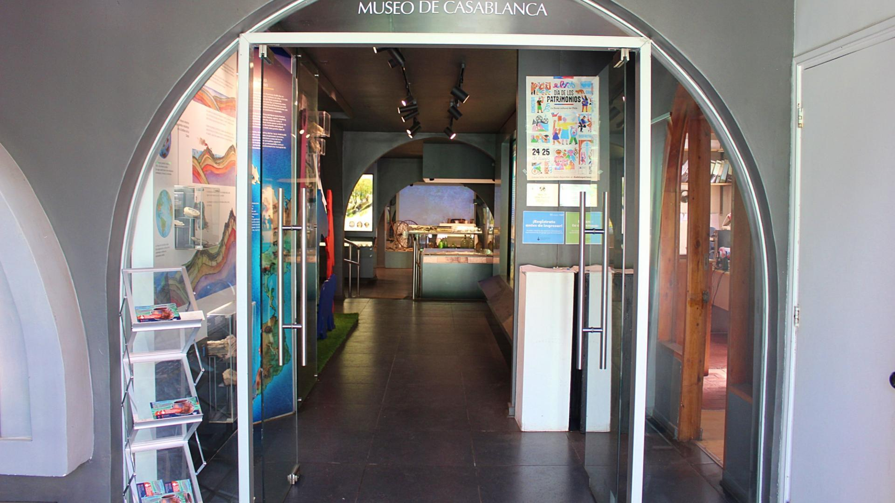
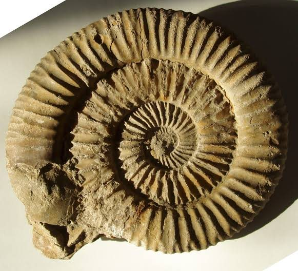
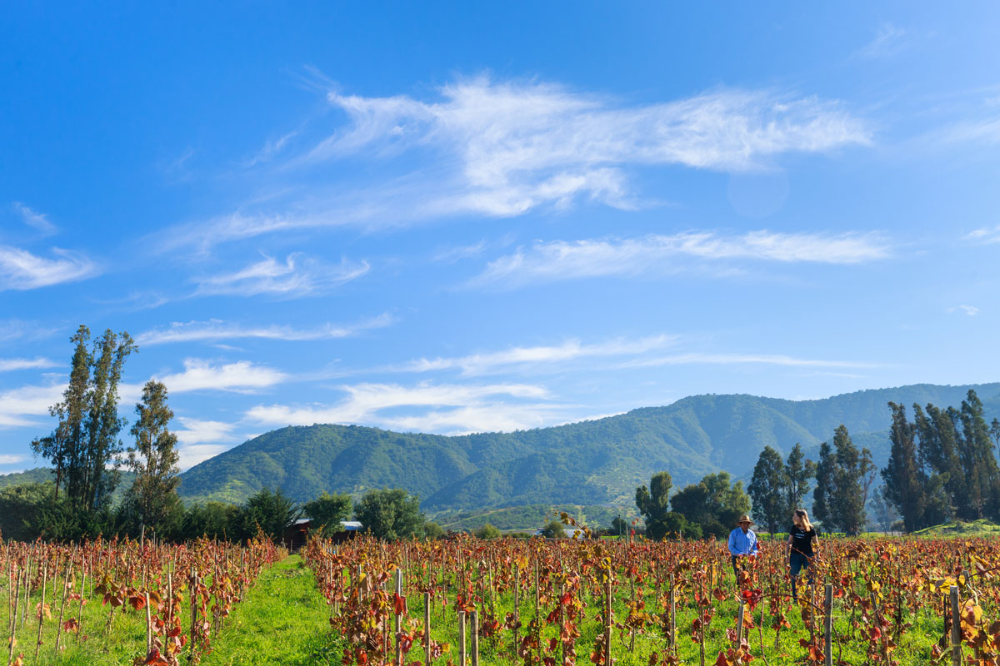
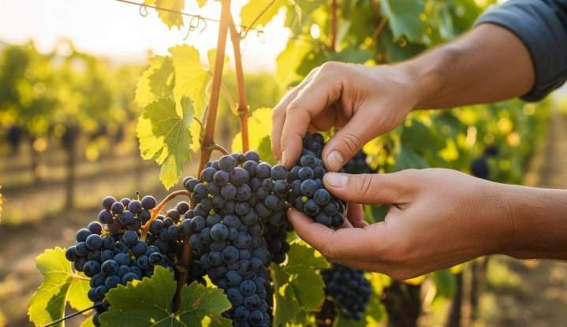
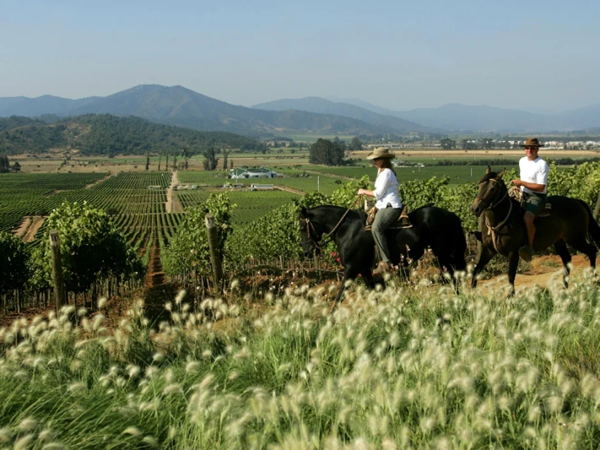
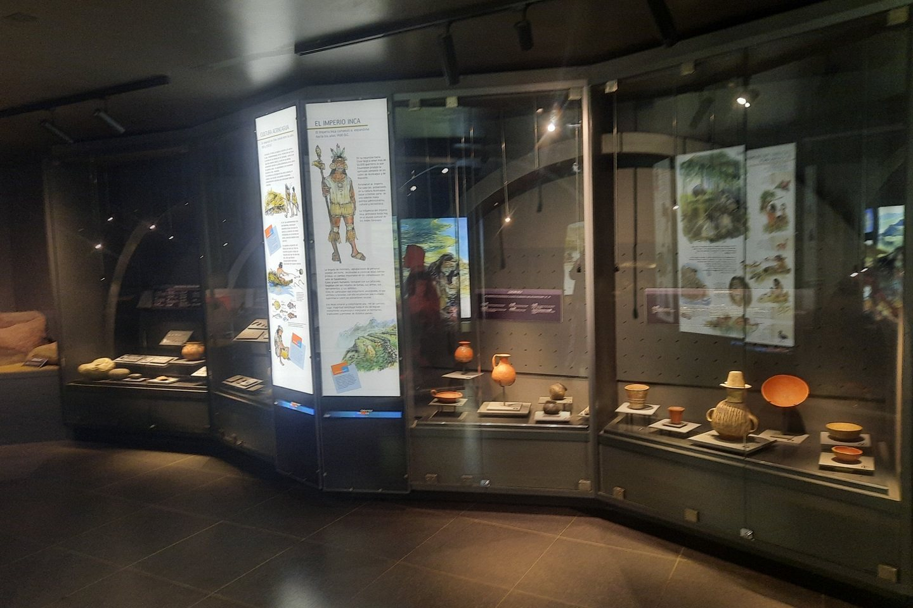

Un territorio con historia
Selecciona uno de los puntos de la imagen para descubrir más sobre el patrimonio y la historia de Casablanca.

Mucho antes de sus viñedos, este territorio ya guardaba historias entre el valle y el mar.
Recorrer la historiaEl paisaje de Casablanca reúne huellas naturales, arqueológicas y culturales. Esta selección es una introducción para descubrirlas; el contenido histórico definitivo deberá revisarse con fuentes locales y el museo.
Descubre algunos de los lugares y acontecimientos que forman parte de la identidad de nuestra comuna. Selecciona los puntos para conocer más.
Selecciona uno de los puntos de la imagen para descubrir más sobre el patrimonio y la historia de Casablanca.
Selecciona una etapa para conocer una breve introducción.

La historia del paisaje se remonta mucho más allá de la ciudad actual. Los registros naturales y geológicos ayudan a comprender cómo se ha transformado el entorno a través del tiempo.
Los textos e imágenes de esta sección deben validarse con el museo o fuentes patrimoniales antes de su publicación definitiva.
Más allá de sus edificios y paisajes, Casablanca conserva una identidad ligada a las personas, sus oficios y las actividades que dan vida al territorio.

01El paisaje rural forma parte de la identidad del valle. Sus actividades agrícolas y el trabajo de las comunidades son parte importante de la relación entre las personas y su entorno.

02La actividad vitivinícola es uno de los elementos más reconocidos del valle. Detrás de cada cosecha existe el trabajo de personas que participan en el desarrollo de esta tradición.

03Las actividades culturales y los encuentros comunitarios permiten compartir experiencias, mantener vínculos y transmitir la identidad de un territorio entre generaciones.
Las fotografías de esta sección son referenciales y no necesariamente corresponden a registros realizados en Casablanca.

El Museo Arqueológico y Antropológico de Casablanca invita a conocer la memoria del territorio a través de colecciones arqueológicas, paleontológicas e históricas. Entre sus piezas se encuentran objetos relacionados con las culturas Bato, Aconcagua e Inca, además de elementos vinculados con la historia rural de la comuna.
Dirección: Portales 02, Casablanca.
Horario registrado: lunes a viernes, de 08:30 a 14:00 y de 15:00 a 17:30 horas.
Entrada gratuita, según el Registro de Museos de Chile. Se recomienda confirmar previamente los horarios y disponibilidad de atención.
Teléfono: +56 32 277 7480.
Consultar ficha del museo